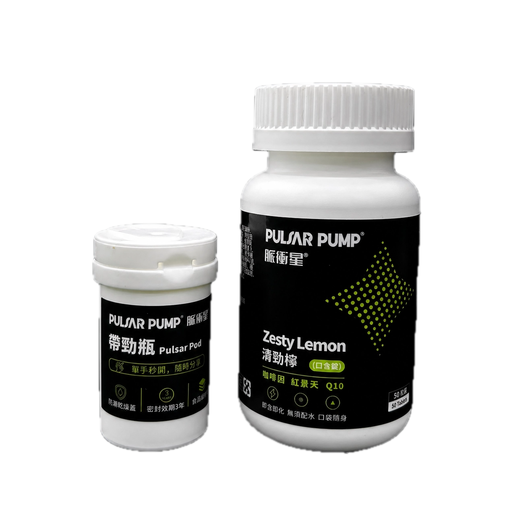

不是每一次補給，都需要一大包。
清勁檸適合放在「需要方便、快速、低負擔」的情境中使用。
馬拉松後段
補給開始吃不下，口袋裡仍需要一個簡單選項。
長距離騎乘
不想停車、不想再拿水壺沖粉，直接含一粒。
越野爬升
雙手忙著抓杖，補給必須更小、更好拿。
工作與移動
午後、長途移動、會議前，需要保持節奏時使用。
為什麼是口含錠？
清勁檸的差異不只在成分，而是在劑型。它被設計成可以放入口袋、在需要時直接使用。
傳統補給的限制
清勁檸的使用方式
三大核心成分，各自分工
不把清勁檸包裝成神奇補給，而是讓成分角色清楚、使用目的清楚。
瓜拿納萃取
天然咖啡因來源，四粒的咖啡因含量約相當於一杯中美式咖啡(咖啡因195mg-215mg)，提供平緩持續的咖啡因釋放，適合需要節奏支持的運動與日常情境。
紅景天萃取
高原植物來源成分，常見於耐力運動相關配方。在清勁檸配方中，與瓜拿納協同運作，適合長時間運動中後段使用。
輔酶 CoQ10
參與細胞能量代謝的重要輔酶，存在於人體每個細胞中。在清勁檸配方中作為能量代謝支援因子，與咖啡因形成互補的雙軌補給邏輯。
比賽日的口袋配置
清勁檸不是要取代能量膠，也不是取代電解質。它更適合作為 PulsarPump Performance System 裡的輕量工具。
Race Pocket
購買清勁檸
即贈 Pulsar Pod
帶勁瓶 Pulsar Pod，單手秒開、食品級材質、防潮乾燥蓋設計，隨時帶著走，也能分享隊友。
這個瓶子，是為了那個你想分享的瞬間。

產品規格
| 品名 | 清勁檸 Zesty Lemon 口含錠 |
| 內容量 | 800mg／粒，50粒／瓶 |
| 主要成分 | 瓜拿納、紅景天、輔酶 CoQ10 |
| 使用方式 | 每日 1–4 粒，每日限食用 4 粒 |
| 特色 | 即含即化、無須配水、口袋隨身 |
| 產地 | 臺灣 |
| 保存方式 | 請置於陰涼乾燥及兒童不易取得處，避免高溫、陽光直射 |
注意事項
本產品為食品，非藥品。請依產品標示食用，勿過量。含咖啡因與乳糖；十五歲以下小孩、懷孕或哺乳期間婦女、服用抗凝血藥品 warfarin 者，不宜食用。詳細資訊請以產品外包裝標示為準。
完整成分
檸檬果汁粉（檸檬濃縮汁）、麥芽糊精、氧化澱粉、檸檬酸、香料、β-胡蘿蔔素【葵花籽油、阿拉伯膠、麥芽糊精、水、蔗糖、β-胡蘿蔔素、生育醇（抗氧化劑）、L-抗壞血酸棕櫚酸酯（抗氧化劑）】、瓜拿納萃取物（含咖啡因）【瓜拿納萃取物、麥芽糊精】、玉米糖漿粉、聚乙烯吡咯烷酮、乳糖、香料、二氧化矽、丙二醇、β-環狀糊精、硬脂酸鎂、紅景天萃取物【紅景天萃取物、麥芽糊精】、蔗糖素（甜味劑）、輔酵素 CoQ10
營養標示
每一份量 0.8 公克（1粒）／本包裝含 50 份
| 每份 | 每日參考值% | |
| 熱量 | 2.4 大卡 | 0% |
| 蛋白質 | 0 公克 | 0% |
| 脂肪 | 0 公克 | 0% |
| 飽和脂肪 | 0 公克 | 0% |
| 反式脂肪 | 0 公克 | * |
| 碳水化合物 | 0.6 公克 | 0% |
| 糖 | 0.1 公克 | * |
| 鈉 | 1 毫克 | 0% |
*參考值未訂定／每日參考值：熱量2000大卡、蛋白質60公克、脂肪60公克、飽和脂肪18公克、碳水化合物300公克、鈉2000毫克
常見問題
清勁檸需要配水嗎？
不需要。清勁檸是口含錠，設計上可直接放入口中使用。
一天可以吃幾顆？
依產品標示，每日 1–4 粒，每日限食用 4 粒。
清勁檸有咖啡因嗎？
有。配方含瓜拿納萃取物，為天然咖啡因來源，四粒的咖啡因含量約相當於一杯咖啡，釋放速率比一般無水咖啡因更平緩。對咖啡因敏感者請謹慎使用。
可以搭配 NOXX 或 CramPeace 嗎？
可以依情境搭配。NOXX 偏向長距離能量補給，CramPeace 偏向電解質與高溫情境，清勁檸則是口袋型 Performance Tablet。
Pulsar Pod 會一直贈送嗎？
不會。Pulsar Pod 為首發限量贈品，前 300 組贈完為止。實際活動內容以購買頁公告為準。
把節奏放進口袋。
清勁檸 Zesty Lemon 口含錠，為訓練、比賽與移動情境設計的輕量 Performance Tool。